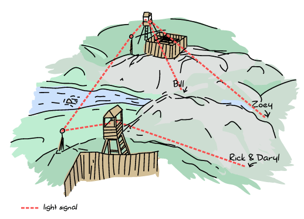

Distribunomicon
Alone in the Dark
Oh hi! Please have a seat. I was expecting you. When you first heard of Erlang, there were two or three attributes that likely attracted you. Erlang is a functional language, it has great semantics for concurrency, and it supports distribution. We've now seen the first two attributes, spent time exploring a dozen more you possibly didn't expect, and we're now at the last big thing, distribution.
We've waited quite a while before getting here because it's not exactly useful to get distributed if we can't make things work locally in the first place. We're finally up to the task and have come a long way to get where we are. Like almost every other feature of Erlang, the distributed layer of the language was first added in order to provide fault tolerance. Software running on a single machine is always at risk of having that single machine dying and taking your application offline. Software running on many machines allows easier hardware failure handling, if, and only if the application was built correctly. There is indeed no benefit regarding fault-tolerance if your application runs on many servers, but cannot deal with one of them being taken down.

See, distributed programming is like being left alone in the dark, with monsters everywhere. It's scary, you don't know what to do or what's coming at you. Bad news: distributed Erlang is still leaving you alone in the dark to fight the scary monsters. It won't do any of that kind of hard work for you. Good news: instead of being alone with nothing but pocket change and a poor sense of aim to kill the monsters, Erlang gives you a flashlight, a machete, and a pretty kick-ass mustache to feel more confident (this also applies to female readers).
That's not especially due to how Erlang is written, but more or less due to the nature of distributed software. Erlang will write the few basic building blocks of distribution: ways to have many nodes (virtual machines) communicating with each other, serializing and deserializing data in communications, extending the concepts of multiple processes to many nodes, ways to monitor network failures, and so on. It will, however, not provide solutions to software-specific problems such as "what happens when stuff crashes."
This is the standard 'tools, not solutions' approach seen before in OTP; you rarely get full-blown software and applications, but you get many components to build systems with. You'll have tools that tell you when parts of the system go up or down, tools to do a bunch of stuff over the network, but hardly any silver bullet that takes care of fixing things for you.
Let's see what kind of flexing we can do with these tools.
This is my Boomstick
To tackle all these monsters in the dark, we've been granted a very useful thing: pretty complete network transparency.
An instance of an Erlang virtual machine that is up and running, ready to connect to other virtual machines is called a node. Whereas some languages or communities will consider a server to be a node, in Erlang, each VM is a node. You can thus have 50 nodes running on a single computer, or 50 nodes running on 50 computers. It doesn't really matter.
When you start a node, you give it a name and it will connect to an application called EPMD (Erlang Port Mapper Daemon), which will run on each of the computers which are part of your Erlang cluster. EPMD will act as a name server that lets nodes register themselves, contact other nodes, and warn you about name clashes if there are any.
From this point on, a node can decide to set up a connection to another one. When it does so, both nodes automatically start monitoring each other, and they can know if the connection is dropped, or if a node disappears. More importantly, when a new node joins another node which is already part of a group of nodes connected together, the new node gets connected to the entire group.
Let's take the idea of a bunch of survivors during a zombie outbreak to illustrate how Erlang nodes set up their connections. We've got Zoey, Bill, Rick, and Daryl. Zoey and Bill know each other and communicate on the same frequency on walkie-talkies. Rick and Daryl are each on their own:

Now let's say Rick and Daryl meet on their way to a survivor camp. They share their walkie-talkie frequency and can now stay up to date with each other before splitting ways again.

At some point, Rick meets Bill. Both are pretty happy about that, and so they decide to share frequencies. At this point, the connections spread and the final graph now looks like this:
That means that any survivor can contact any other directly. This is useful because in the event of the death of any survivor, nobody's left isolated. Erlang nodes are set up in this exact way: everyone connects to everyone.
Don't Drink Too Much Kool-Aid:
This way of doing things, while nice for some fault-tolerance reasons, has a pretty bad drawback in how much you can scale. It will be hard to have hundreds and hundreds of nodes part of your Erlang cluster simply because of how many connections and how much chatter is required. In fact, you will require one port per node you're connecting to.
If you were planning on using Erlang to do that kind of heavy setup, please read on in this chapter where we see why things are that way, and what might be done to go around the problem, if possible at all.
Once the nodes are connected together, they remain fully independent: they keep their own process registry, their own ETS tables (with their own names for tables), and the modules they load are independent from each other. A connected node that crashes won't bring down the nodes it's connected to.
Connected nodes can then start exchanging messages. The distribution model of Erlang was designed so that local processes can contact remote processes and send them regular messages. How is this possible if nothing is shared and all the process registries are unique? As we'll see later when we get into the specifics of distribution, there is a way to access registered processes on a particular node. From that point on, a first message can be sent.
Erlang messages are going to be serialized and unserialized automatically for you in a transparent manner. All data structures, including pids, will work the same remotely and locally. This means that we can send pids over the network, and then communicate with them, sending messages, etc. Even better than that, links and monitors can be set up across the network if you can access the pids!
So if Erlang's doing so much to make everything that transparent, why am I saying it's only giving us a machete, a flashlight, and a mustache?
Fallacies of Distributed Computing
Much like a machete is meant to kill only a given type of monster, Erlang's tools are meant to handle only some kinds of distributed computing. To understand the tools Erlang gives us, it will be useful to first have an idea of what kind of landscape exists in the distributed world, and which assumptions Erlang makes in order to provide fault tolerance.
Some very smart guys took their time in the last few decades to categorize the kind of stuff that goes wrong with distributed computing. They came up with 8 major assumptions people make that ends up biting them in the ass later, some of which Erlang's designers made for various reasons.
The Network is Reliable
The first fallacy of distributed computing is assuming that the application can be distributed over the network. That's kind of weird to say, but there will be plenty of times where the network will go down for annoying reasons: power failures, broken hardware, someone tripping a cord, vortex to other dimensions engulfing mission-critical components, headcrabs infestation, copper theft, etc.
One of the biggest errors you can make, therefore, is to think you can reach remote nodes and talk to them. This is somewhat possible to handle by adding more hardware and gaining redundancy so that if some hardware fails, the application can still be reached somewhere else. The other thing to do is to be ready to suffer a loss of messages and requests, to be ready for things becoming unresponsive. This is especially true when you depend on some kind of third party service that's no longer there, while your own software stack keeps working well.
Erlang doesn't have any special measures to deal with this, as it's usually something where decisions made will be application-specific. After all, who else but you can know how important a specific component will be? Still, you're not totally alone as a distributed Erlang node will be able to detect other nodes getting disconnected (or becoming unresponsive). There are specfic functions to monitor nodes, and links and monitors will also be triggered upon a disconnection.
Even with this, the best thing Erlang has for itself in this case is its asynchronous communication mode. By sending messages asynchronously and forcing developers to send a reply back when things work well, Erlang pushes for all message passing activities to intuitively handle failure. If the process you're talking to is on a node that disappears due to some network failure, we handle it as naturally as any local crash. This is one of the many reasons why Erlang is said to scale well (scaling in performance, but also in design).
Don't Drink Too Much Kool-Aid:
Linking and monitoring across nodes can be dangerous. In the case of a network failure, all remote links and monitors are triggered at once. This might then generate thousands and thousands of signals and messages to various processes, which puts a heavy and unexpected load on the system.
Preparing for an unreliable network also means preparing for sudden failures and making sure your system doesn't get crippled by part of the system suddenly disappearing.
There is no Latency
One of the double-edged aspects of seemingly good distribution systems is that they often end up hiding the fact that the function calls you are making are remote. While you expect some function calls to be really fast, doing them over the network isn't the same at all. It's the difference between ordering a pizza from within the pizzeria and getting one delivered from another city to your house. While there will always be a basic wait time, in one case your pizza might be delivered cold because it just took too long.
Forgetting that network communications make things slower even for really small messages can be a costly error if you always expect really fast results. Erlang's model treats us well there. Because of the way we set up our local applications with isolated processes, asynchronous messages, timeouts and always thinking of the possibility for processes to fail, there is very little adaptation required to go distributed: the timeouts, links, monitors and asynchronous patterns remain the same and still are as reliable. We always expected that kind of problem from the beginning and so Erlang implicitly doesn't assume there is no latency.
You, however, might make that assumption in your design and expect replies faster than realistically possible. Just keep an eye open.
Bandwidth is Infinite
Although network transfers are getting faster and faster all the time, and that generally speaking, each byte transferred over the network is cheaper as time goes, it is risky to assume that sending copious amounts of data is simple and easy.
Generally speaking, because of how we build applications locally, we won't have too many problems with that in Erlang. Remember, one good trick is to send messages about what is happening rather than moving new state around ('Player X found item Y' rather than sending Player X's entire inventory over and over again).
If, for some reason, you need to be sending large messages, be extremely careful. The way Erlang distribution and communication works over many nodes is especially sensitive to large messages. If two nodes are connected together, all their communications will tend to happen over a single TCP connection. Because we generally want to maintain message ordering between two processes (even across the network), messages will be sent sequentially over the connection. That means that if you have one very large message, you might be blocking the channel for all the other messages.
Worse than that, Erlang knows whether nodes are alive or not by sending a thing called heartbeats. Heartbeats are small messages sent at a regular interval between two nodes basically saying "I'm still alive, keep on keepin' on!". They're like our Zombie survivors routinely pinging each other with messages; "Bill, are you there?" And if Bill never replies, then you might assume he's dead (our out of batteries) and he won't get your future communications. Anyway, heartbeats are sent over the same channel as regular messages.
The problem is that a large message can thus hold heartbeats back. Too many large messages keeping heartbeats at bay for too long and either of the nodes will eventually assume the other is unresponsive and disconnect from each other. That's bad. In any case, the good Erlang design lesson to keep this from happening is to keep your messages small. Everything will be better that way.
The Network is Secure
When you get distributed, it's often very dangerous to believe that everything is safe, that you can trust messages you receive. It can be simple things like someone unexpected fabricating messages and sending them to you, someone intercepting packets and modifying them (or looking at sensitive data), or in the worst case, someone being able to take over your application or the system it runs on.
In the case of distributed Erlang, this is sadly an assumption that was made. Here is what Erlang's security model looks like:
* this space intentionally left blank *
Yep. This is because Erlang distribution was initially meant for fault tolerance and redundancy of components. In the old days of the language, back when it was used for telephone switches and other telecommunication applications, Erlang would often be deployed on hardware running in the weirdest places — very remote locations with weird conditions (engineers sometimes had to attach servers to the wall to avoid wet ground, or install custom heating systems in the woods in order for the hardware to run at optimal temperatures). In these cases, you had failover hardware part of the same physical location as the main one. This is often where distributed Erlang would run, and it explains why Erlang designers assumed a safe network to operate with.
Sadly, this means that modern Erlang applications can rarely be clustered across different data centers. In fact, it isn't recommended to do so. Most of the time, you will want your system to be based on many smaller, walled off clusters of Erlang nodes, usually located in single locations. Anything more complex will need to be left to the developers: either switching to SSL, implementing their own high level communication layer, tunneling over secure channels, or reimplementing the communication protocol between nodes. Pointers on how to do so exist in the ERTS user guide, in How to implement an alternative carrier for the Erlang distribution. More details on the distribution protocol is contained in Distribution Protocol. Even in these cases, you have to be pretty careful, because someone gaining access to one of the distributed nodes then has access to all of them, and can run any command they can.
Topology Doesn't Change
When first designing a distributed application made to run on many servers, it is possible that you will have a given number of servers in mind, and maybe a given list of host names. Maybe you will design things with specific IP addresses in mind. This can be a mistake. Hardware dies, operations people move servers around, new machines are added, some are removed. The topology of your network will constantly change. If your application works with any of these topological details hard-coded, then it won't easily handle these kinds of changes in the network.
In the case of Erlang, there is no explicit assumption made in that way. However, it is very easy to let it creep inside your application. Erlang nodes all have a name and a host name, and they can constantly be changing. With Erlang processes, you not only have to think about how the process is named, but also about where it is now located in a cluster. If you hard code both the names and hosts, you might be in trouble at the next failure. Don't worry too much though, as we'll later see a few interesting libraries that let us forget about node names and topology in general, while still being able to locate specific processes.
There is Only One Administrator
This is something a distribution layer of a language or library can't prepare you for, no matter what. The idea of this fallacy is that you do not always have only one main operator for your software and its servers, although it might be designed as if there were only one. If you decide to run many nodes on a single computer, then you might never have to care about this fallacy. However, if you get to run stuff across different locations, or a third party depends on your code, then you have to take care.
Things to pay attention to include giving others tooling to diagnose problems on your system. Erlang is somewhat easy to debug when you can manipulate a VM manually — you can even reload code on the fly if you need to, after all. Someone who cannot access your terminal and sit in front of the node will need different facilities to operate though.
Another aspect of this fallacy is that things like restarting servers, moving instances between data centers, or upgrading parts of your software stack isn't necessarily something only one person or a single team controls. In very large software projects, it is in fact very likely that many teams, or even many different software companies, take charge of different parts of a greater system.
If you're writing protocols for your software stack, being able to handle many versions of that protocol might be necessary depending on how fast or slow your users and partners are to upgrade their code. The protocol might contain information about its versioning from the beginning, or be able to change halfway through a transaction, depending on your needs. I'm sure you can think of more examples of things that can go wrong.
Transport Cost is Zero
This is a two-sided assumption. The first one relates to the cost of transporting data in terms of time, and the second one is related to the cost of transporting data in terms of money.
The first case assumes that doing things like serializing data is nearly free, very fast, and doesn't play a big role. In reality, larger data structures take longer to be serialized than small ones, and then need to be unserialized on the other end of the wire. This will be true no matter what you carry across the network. Small messages will help reduce how noticeable the effect of this is.
The second aspect of assuming transport cost is zero has to do with how much it costs to carry data around. In modern server stacks, memory (both in RAM and on disk) is often cheap compared to the cost of bandwidth, something you have to pay for continuously, unless you own the whole network where things run. Optimizing for fewer requests with smaller messages will be rewarding in this case.
For Erlang, due to its initial use cases, no special care has been taken to do things like compress messages going cross-node (although the functions for it already exist). Instead, the original designers chose to let people implement their own communication layer if they required it. The responsibility is thus on the programmer to make sure small messages are sent and other measures are taken to minimize the costs of transporting data.
The Network is Homogeneous
This last assumption is about thinking that all components of a networked application will speak the same language, or will use the same formats to operate together.
For our zombie survivors, this can be a question of not assuming that all survivors will always speak English (or good English) when they lay their plans, or that a word will hold different meanings to different people.
In terms of programming, this is usually about not relying on closed standards, but using open ones instead, or being ready to switch from one protocol to another one at any point in time. When it comes to Erlang, the distribution protocol is entirely public, but all Erlang nodes assume that people communicating with them speak the same language. Foreigners trying to integrate themselves to an Erlang cluster either have to learn to speak Erlang's protocol, or Erlang apps need some kind of translation layer for XML, JSON, or whatever.
If it quacks like a duck and walks like a duck, then it must be a duck. That's why we have things like C-nodes. C-nodes (or nodes in other languages than C) are built on the idea that any language and application can implement Erlang's protocol and then pretend it is an Erlang node in a cluster.
Another solution for data exchange is to use something called BERT or BERT-RPC. This is an exchange format like XML or JSON, but specified as something similar to the Erlang External Term Format.
In short, you always have to be careful for the following points:
- You shouldn't assume the network is reliable. Erlang doesn't have any special measure for that except detecting that something went wrong for you (although that's not too bad as a feature)
- The network might be slow, from time to time. Erlang gives asynchronous mechanisms and knows about it, but you have to be careful so your application doesn't go against this and ruin it.
- Bandwidth isn't infinite. Small, descriptive messages help respect this.
- The network isn't secure, and Erlang doesn't have anything to offer by default for this.
- The topology of the network can change. No explicit assumption is made by Erlang, but you might make some about where things are and how they're named.
- You (or your organization) only rarely fully control the structure of things. Parts of your system may be outdated, use different versions, be restarted or down when you don't expect it.
- Transporting data has a costs. Again, small, short messages help.
- The network is heterogeneous. Not everything is the same, and data exchange should rely on well-documented formats.
Note: The fallacies of distributed computing were introduced in Fallacies of Distributed Computing Explained by Arnon Rotem-Gal-Oz
Dead or Dead Alive
Understanding the fallacies of distributed computing should have partially explained why we're fighting monsters in the dark, but with better tools. There are still a lot of issues and things left for us to do. Many of them are design decisions to be careful about (small messages, reducing communication, etc.) regarding the fallacies above. The most problematic issue has to do with nodes dying or the network being unreliable. This one is especially nasty because there is no good way to know whether something is dead or alive (without being able to contact it).
Let's get back to Bill, Zoey, Rick and Daryl, our 4 Zombie apocalypse survivors. They all met at a safe house, spent a few days resting in there, eating whatever canned food they could find. After a while, they had to move out and split across town to find more resources. They've set a rendez-vous point in a small camp on the limits of the small town they're in.
During the expedition they keep contact by talking with the walkie-talkies. They announce what they found, clear paths, maybe they find new survivors.
Now suppose that at some point between the safe house and the rendez-vous point, Rick tries to contact his comrades. He manages to call Bill and Zoey, talk to them, but Daryl isn't reachable. Bill and Zoey can't contact him either. The problem is that there is absolutely no way to know if Daryl has been devoured by zombies, if his battery is dead, if he's asleep or if he's just underground.
The group has to decide whether to keep waiting for him, keep calling for a while, or assume he's dead and move forward.
The same dilemma exists with nodes in a distributed system. When a node becomes unresponsive, is it gone because of a hardware failure? Did the application crash? Is there congestion on the network? Is the network down? In some cases, the application is not running anymore and you can simply ignore that node and continue what you're doing. In other cases, the application is still running on the isolated node; from that node's perspective, everything else is dead.
Erlang made the default decision of considering unreachable nodes as dead nodes, and reachable nodes as alive. This is a pessimistic approach that makes sense if you want to very quickly react to catastrophic failures; it assumes that the network is generally less likely to fail than the hardware or the software in the system, which makes sense considering how Erlang was used originally. An optimistic approach (which assumes nodes are still alive) could delay crash-related measures because it assumes that the network is more likely to fail than hardware or the software, and thus have the cluster wait longer for the reintegration of disconnected nodes.
This raises a question. In a pessimistic system, what happens when the node we thought dead suddenly comes back again and it turns out it never died? We're caught by surprise by a living dead node, which had a life of its own, isolated from the cluster in every way: data, connections, etc. There are some very annoying things that can happen.
Let's imagine for a moment that you have a system with 2 nodes in 2 different data centers. In that system, users have money in their account, with the full amount held on each node. Each transaction then synchronizes the data to all the other nodes. When all the nodes are fine, a user can keep spending money until his account is empty and then nothing can be sold anymore.
The software is chugging along fine, but at some point, one of the nodes gets disconnected from the other. There is no way to know if the other side is alive or dead. For all we care, both nodes could still be receiving requests from the public, but without being able to communicate with each other.
There are two general strategies that can be taken: stop all transactions, or don't. The risk of picking the first one is that your product becomes unavailable and you're losing money. The risk of the second one is that a user with $1000 in his account now has two servers that can accept $1000 of transactions, for a total of $2000! Whatever we do, we risk losing money if we don't do things right.
Isn't there a way by which we could avoid the issue entirely by keeping the application available during netsplits, without having to lose data in between servers?
My Other Cap is a Theorem
A quick answer to the previous question is no. There is sadly no way to keep an application alive and correct at the same time during a netsplit.
This idea is known as the CAP Theorem (You might be interested in You Can't Sacrifice Partition Tolerance too). The CAP Theorem first states that there are three core attributes to all distributed systems that exist: Consistency, Availability, and Partition Tolerance.
Consistency
In the previous example, consistency would be having the ability to have the system, whether there are 2 or 1000 nodes that can answer queries, to see exactly the same amount of money in the account at a given time. This is something usually done by adding transactions (where all nodes must agree to making a change to a database as a single unit before doing so) or some other equivalent mechanism.
By definition, the idea of consistency is that all operations look as if they were completed as a single indivisible block even across many nodes. This is not in terms of time, but in terms of not having two different operations on the same piece of data modifying them in ways that gives multiple different values reported by system during these operations. It should be possible to modify a piece of data and not have to worry about other actors ruining your day by fiddling with it at the same time you do.
Availability
The idea behind availability is that if you ask the system for some piece of data, you're able to get a response back. If you don't get an answer back, the system isn't available to you. Note that a response that says "sorry I can't figure out results because I'm dead" isn't really a response, but only a sad excuse for it. There is no more useful information in this response than in no response at all (although academics are somewhat divided on the issue).
Note: an important consideration in the CAP theorem is that availability is only a concern to nodes that are not dead. A dead node cannot send responses because it can't receive queries in the first place. This isn't the same as a node that can't send a reply because a thing it depends on is no longer there! If the node can't take requests, change data or return erroneous results, it isn't technically a threat to the balance of the system in terms of correctness. The rest of the cluster just has to handle more load until it comes back up and can be synchronized.
Partition Tolerance
This is the tricky part of the CAP theorem. Partition tolerance usually means that the system can keep on working (and contain useful information) even when parts of it can no longer communicate together. The whole point of partition tolerance is that the system can work with messages possibly being lost between components. The definition is a bit abstract and open-ended, and we'll see why.
The CAP Theorem basically specifies that in any distributed system, you can only have two of CAP: either CA, CP, or AP. There is no possible way to have all of them. This is both bad and good news. The bad news is that it's impossible to have everything always going well even with a failing network. The good news is that this is a theorem. If a customer asks you to provide all three of them, you will have the advantage of being able to tell them it is literally impossible to do, and won't have to lose too much time outside of explaining to them what the hell the CAP theorem is.
Of the three possibilities, one that we can usually dismiss is the idea of CA (Consistency + Availability). The reason for this is that the only time you would really want this is if you dare to say the network will never fail, or that if it does, it does as an atomic unit (if one thing fails, everything does at once).
Until someone invents a network and hardware that never fails, or has some way to make all parts of a system fail at once if one of them does, failure is going to be an option. Only two combinations of the CAP theorem remain: AP or CP. A system torn apart by a netsplit can either remain available or consistent, but not both.
Note: some systems will choose to have neither 'A' or 'C'. In some cases of high performance, criteria such as throughput (how many queries you can answer at all) or latency (how fast can you answer queries) will bend things in a way such that the CAP theorem isn't about 2 attributes (CA, CP, or AP), but also about 2 and fewer attributes.
For our group of survivors, time passed and they fended off groups of undead for a good while. Bullets pierced brains, baseball bats shattered skulls and people bit were left behind. Bill, Zoey, Rick and Daryl's batteries eventually ran out and they were unable to communicate. As luck would have it, they all found two survivor colonies populated with computer scientists and engineers enamored with zombie survival. The colony survivors were used to the concepts of distributed programming and were used to communicating with light signals and mirrors with home-made protocols.
Bill and Zoey found the 'Chainsaw' colony while Rick and Daryl found the 'Crossbow' camp. Given that our survivors were the newest arrivals in their respective colonies, they were often delegated to go out in the wild, hunt for food and kill Zombies coming too close to the perimeters while the rest of people debated the merits of vim vs. emacs, the only war that couldn't die after a complete Zombie apocalypse.
On their hundredth day there, our four survivors were sent to meet halfway across the camps to trade goods for each colony.
Before leaving, a rendez-vous point was decided by the chainsaw and crossbow colonies. If at any point in time the destination or meeting time were to change, Rick and Daryl could message the Crossbow colony or Zoey and Bill could message the Chainsaw colony. Then each colony would communicate the information to the other colony, which would forward the changes to the other survivors:
So knowing this, all four survivors left early on a Sunday morning for a long trip on foot, due to meet on Friday morning before dawn. Everything went fine (except the occasional skirmishes with dead people who had been alive for quite a while now).
Unfortunately, on Wednesday, heavy rain and increased zombie activity had Bill and Zoey separated, lost and delayed. The new situation looked a bit like this:
To make matters worse, after the rain, the usually clear sky between the two colonies got foggy and it became impossible for the Chainsaw computer scientists to communicate with the Crossbow people.
Bill and Zoey communicated their problems to their colony and asked to set new meeting times. This would have been alright without the fog, but now we've got the equivalent of a netsplit.
If both camps work under the Consistency + Partition Tolerance approach, they will just keep Zoey and Bill from setting a new meeting time. See, the CP approach is usually all about stopping modifications to the data so it remains consistent, and all survivors can still ask their respective camps for the date from time to time. They will just be denied the right to change it. Doing this will ensure that there is no way for some survivors to mess up the planned meeting time — any other survivor cut off from any contact could still meet there in time no matter what, independently.
If both camps instead picked Availability + Partition Tolerance, then survivors could have been allowed to change meeting dates. Each of the sides of the partitions would have their own version of the meeting data. So if Bill called for a new meeting for Friday night, the general state becomes:
Chainsaw: Friday night Crossbow: Friday before dawn
As long as the split lasts, Bill and Zoey will get their information from Chainsaw only, and Rick and Daryl from Crossbow only. This lets part of the survivors reorganize themselves if needed.
The interesting problem here is how to handle the different versions of the data when the split is resolved (and the fog goes away). The CP approach to this is pretty straightforward: the data didn't change, there is nothing to do. The AP approach has more flexibility and problems to solve. Usually, different strategies are employed:
- Last Write Wins is a conflict resolution method where whatever the last update was is the one to be kept. This one can be tricky because in distributed settings, timestamps can be off or things can happen at exactly the same time.
- A winner can be picked randomly.
- More sophisticated methods to help reduce conflicts include time-based methods such as last write wins, but with relative clocks. Relative clocks do not work with absolute time values, but with incrementing values every time someone modifies a file. If you want to know more about this, read up on Lamport clocks or vector clocks.
- The onus of picking what to do with the conflict can be pushed back to the application (or in our case, to the survivors). The receiving end will just have to choose which of the conflicting entries is the right one. This is a bit what happens when you have merge conflicts with source control with SVN, Mercurial, Git, etc.
Which one's better? The way I've described things kind of led us to believe that we have the choice to be either fully AP or fully CP, like an on/off switch. In the real world, we can have various things like quorum systems where we turn this 'yes/no' question into a dial we can turn to choose how much consistency we want.
A quorum system works by a few very simple rules. You have N nodes in the system and require M of them to agree to modify the data to make it possible. A system with a relatively low consistency requirement could ask for only 15% of the nodes to be available to make a change. This means that in cases of splits, even small fragments of the network keep being able to modify the data. A higher consistency rating, set to maybe 75% of the nodes would mean that a larger part of the system needs to be present in order to make changes. In this situation, if a few of the nodes are isolated, they won't have the right to change the data. However, the major part of the system that's still interconnected can work fine.
By changing making the M value of required nodes up to N (the total number of nodes), you can have a fully consistent system. By giving M the value 1, you have a fully AP system, with no consistency guarantees.
Moreover, you could play with these values on a per-query basis: queries having to do with things of little importance (someone just logged on!) can have lower consistency requirements, while things having to do with inventory and money could require more consistency. Mix this in with different conflict resolution methods for each case and you can get surprisingly flexible systems.
Combined with all the different conflict resolution solutions available, a lot of options become available to distributed systems, but their implementation remains very complex. We won't use them in detail, but I think it's important to know what's available out there just to be aware of the different options available.
For now, we can stick to the basics of distributed computing with Erlang.
Setting up an Erlang Cluster
Except for the whole part about handling the fallacies of distributed computing, the hardest part about distributed Erlang is managing to set things up right in the first place. Connecting nodes together across different hosts is a special kind of pain. To avoid this, we'll usually try things out using many nodes on a single computer, which tends to make things easier.
As mentioned earlier, Erlang gives names to each of the nodes to be able to locate and contact them. The names are of the form Name@Host, where the host is based on available DNS entries, either over the network or in your computer's host files (/etc/hosts on OSX, Linux and other Unix-likes, C:\Windows\system32\drivers\etc\hosts for most Windows installs). All names need to be unique to avoid conflicts — if you try to start a node with the same name as another one on the same exact hostname, you'll get a pretty terrible crash message.
Before starting these shells to provoke a crash, we have to know a bit about the names. There are two types of names: short names and long names. Long names are based on fully qualified domain names (aaa.bbb.ccc), and many DNS resolvers consider a domain name to be fully qualified if they have a period (.) inside of it. Short names will be based on host names without a period, and are resolved going through your host file or through any possible DNS entry. Because of this, it is generally easier to set up a bunch of Erlang nodes together on a single computer using short names than long names. One last thing: because names need to be unique, nodes with short names cannot communicate with nodes that have long names, and the opposite is also true.
To pick between long and short names, you can start the Erlang VM with two different options: erl -sname short_name@domain or erl -name long_name@some.domain. Note that you can also start nodes with only the names: erl -sname short_name or erl -name long_name. Erlang will automatically attribute a host name based on your operating system's configuration. Lastly, you also have the option of starting a node with a name such as erl -name name@127.0.0.1 to give a direct IP.
Note: Windows users should still use werl instead of erl. However, in order to start distributed nodes and giving them a name, the node should be started from the command line instead of clicking some shortcut or executable.
Let's start two nodes:
erl -sname ketchup ... (ketchup@ferdmbp)1>
erl -sname fries ... (fries@ferdmbp)1>
To connect fries with ketchup (and make a delicious cluster) go to the first shell and enter the following function:
(ketchup@ferdmbp)1> net_kernel:connect_node(fries@ferdmbp). true
The net_kernel:connect_node(NodeName) function sets up a connection with another Erlang node (some tutorials use net_adm:ping(Node), but I think net_kernel:connect_node/1 sounds more serious and lends me credence!) If you see true as the result from the function call, congratulations, you're in distributed Erlang mode now. If you see false, then you're in for a world of hurt trying to get your network to play nice. For a very quick fix, edit your host files to accept whatever host you want. Try again and see if it works.
You can see your own node name by calling the BIF node() and see who you're connecting to by calling the BIF nodes():
(ketchup@ferdmbp)2> node(). ketchup@ferdmbp (ketchup@ferdmbp)3> nodes(). [fries@ferdmbp]
To get the nodes communicating together, we'll try with a very simple trick. Register each shell's process as shell locally:
(ketchup@ferdmbp)4> register(shell, self()). true
(fries@ferdmbp)1> register(shell, self()). true
Then, you'll be able to call the process by name. The way to do it is to send a message to {Name, Node}. Let's try this on both shells:
(ketchup@ferdmbp)5> {shell, fries@ferdmbp} ! {hello, from, self()}.
{hello,from,<0.52.0>}
(fries@ferdmbp)2> receive {hello, from, OtherShell} -> OtherShell ! <<"hey there!">> end.
<<"hey there!">>
So the message is apparently received, and we send something to the other shell, which receives it:
(ketchup@ferdmbp)6> flush(). Shell got <<"hey there!">> ok
As you can see, we transparently send tuples, atoms, pids, and binaries without a problem. Any other Erlang data structure is fine too. And that's it. You know how to work with distributed Erlang! There is yet another BIF that might be useful: erlang:monitor_node(NodeName, Bool). This function will let the process that calls it with true as a value for Bool receive a message of the format {nodedown, NodeName} if the node dies.
Unless you're writing a special library that relies on checking the life of other nodes, you will rarely need to use erlang:monitor_node/2. The reason for this is that functions like link/1 and monitor/2 still work across nodes.
If you set up the following from the fries node:
(fries@ferdmbp)3> process_flag(trap_exit, true). false (fries@ferdmbp)4> link(OtherShell). true (fries@ferdmbp)5> erlang:monitor(process, OtherShell). #Ref<0.0.0.132>
And then kill the ketchup node, the fries' shell process should receive an 'EXIT' and monitor message:
(fries@ferdmbp)6> flush().
Shell got {'DOWN',#Ref<0.0.0.132>,process,<6349.52.0>,noconnection}
Shell got {'EXIT',<6349.52.0>,noconnection}
ok
And that's the kind of stuff you'll see. But hey, wait a minute there. Why the hell does the pid look like that? Am I seeing things right?
(fries@ferdmbp)7> OtherShell. <6349.52.0>
What? Shouldn't this be <0.52.0>? Nope. See, that way of displaying a pid is just some kind of visual representation of what a process identifier is really like. The first number represents the node (where 0 means the process is coming from the current node), the second one is a counter, and the third one is a second counter for when you have so many processes created that the first counter is not enough. The true underlying representation of a pid is more like this:
(fries@ferdmbp)8> term_to_binary(OtherShell). <<131,103,100,0,15,107,101,116,99,104,117,112,64,102,101, 114,100,109,98,112,0,0,0,52,0,0,0,0,3>>
The binary sequence <<107,101,116,99,104,117,112,64,102,101,114,100,109,98,112>> is in fact a latin-1 (or ASCII) representation of <<"ketchup@ferdmbp">>, the name of the node where the process is located. Then we have the two counters, <<0,0,0,52>> and <<0,0,0,0>>. The last value (3) is some token value to differentiate whether the pid comes from an old node, a dead one, etc. That's why pids can be used transparently anywhere.
Note: Instead of killing a node to disconnect it, you may also want to try the BIF erlang:disconnect_node(Node) to get rid of the node without shutting it down.
Note: if you're unsure which node a Pid is coming from, you don't need to convert it to a binary to read the node name. Just call node(Pid) and the node where it's running on will be returned as a string.
Other interesting BIFs to use are spawn/2, spawn/4, spawn_link/2 and spawn_link/4. They work exactly like the other spawn BIFs except that these let you spawn functions on remote nodes. Try this from the ketchup node:
(ketchup@ferdmbp)6> spawn(fries@ferdmbp, fun() -> io:format("I'm on ~p~n", [node()]) end).
I'm on fries@ferdmbp
<6448.50.0>
This is essentially a remote procedure call: we can choose to run arbitrary code on other nodes, without giving ourselves more trouble than that! Interestingly, the function is running on the other node, but we receive the output locally. That's right, even output can be transparently redirected across the network. The reason for this is based on the idea of group leaders. Group leaders are inherited the same way whether they're local or not.
Those are all the tools you need in Erlang to be able to write distributed code. You have just received your machete, flashlight and mustache. You're at a level that would take a very long while to achieve with other languages without such a distribution layer. Now is the time to kill monsters. Or maybe first, we have to learn about the cookie monster.
Cookies

If you recall the beginning of the chapter, I had mentioned the idea that all Erlang nodes are set up as meshes. If someone connects to a node, it gets connected to all the other nodes. There are times where what you want to do is run different Erlang node clusters on the same piece of hardware. In these cases, you do not want to be accidentally connecting two Erlang node clusters together.
Because of this, the designers of Erlang added a little token value called a cookie. While documents like the official Erlang documentation put cookies under the topic of security, they're really not security at all. If it is, it has to be seen as a joke, because there's no way anybody serious considers the cookie a safe thing. Why? Simply because the cookie is a little unique value that must be shared between nodes to allow them to connect together. They're closer to the idea of user names than passwords and I'm pretty sure nobody would consider having a username (and nothing else) as a security feature. Cookies make way more sense as a mechanism used to divide clusters of nodes than as an authentication mechanism.
To give a cookie to a node, just start it by adding a -setcookie Cookie argument to the command line. Let's try again with two new nodes:
$ erl -sname salad -setcookie 'myvoiceismypassword' ... (salad@ferdmbp)1>
$ erl -sname mustard -setcookie 'opensesame' ... (mustard@ferdmbp)1>
Now both nodes have different cookies and they shouldn't be able to communicate together:
(salad@ferdmbp)1> net_kernel:connect_node(mustard@ferdmbp). false
This one has been denied. Not many explanations. However, if we look at the mustard node:
=ERROR REPORT==== 10-Dec-2011::13:39:27 === ** Connection attempt from disallowed node salad@ferdmbp **
Good. Now what if we did really want salad and mustard to be together? There's a BIF called erlang:set_cookie/2 to do what we need. If you call erlang:set_cookie(OtherNode, Cookie), you will use that cookie only when connecting to that other node. If you instead use erlang:set_cookie(node(), Cookie), you'll be changing the node's current cookie for all future connections. To see the changes, use erlang:get_cookie():
(salad@ferdmbp)2> erlang:get_cookie(). myvoiceismypassword (salad@ferdmbp)3> erlang:set_cookie(mustard@ferdmbp, opensesame). true (salad@ferdmbp)4> erlang:get_cookie(). myvoiceismypassword (salad@ferdmbp)5> net_kernel:connect_node(mustard@ferdmbp). true (salad@ferdmbp)6> erlang:set_cookie(node(), now_it_changes). true (salad@ferdmbp)7> erlang:get_cookie(). now_it_changes
Fantastic. There is one last cookie mechanism to see. If you tried the earlier examples of this chapter, go look into your home directory. There should be a file named .erlang.cookie in there. If you read it, you'll have a random string that looks a bit like PMIYERCHJZNZGSRJPVRK. Whenever you start a distributed node without a specific command to give it a cookie, Erlang will create one and put it in that file. Then, every time you start a node again without specifying its cookie, the VM will look into your home directory and use whatever is in that file.
Remote Shells
One of the first things we've learned in Erlang was how to interrupt running code using ^G (CTRL + G). In there, we had seen a menu for distributed shells:
(salad@ferdmbp)1> User switch command --> h c [nn] - connect to job i [nn] - interrupt job k [nn] - kill job j - list all jobs s [shell] - start local shell r [node [shell]] - start remote shell q - quit erlang ? | h - this message
The r [node [shell]] option is the one we're looking for. We can start a job on the mustard node by doing as follows:
--> r mustard@ferdmbp
--> j
1 {shell,start,[init]}
2* {mustard@ferdmbp,shell,start,[]}
--> c
Eshell V5.8.4 (abort with ^G)
(mustard@ferdmbp)1> node().
mustard@ferdmbp
And there you have it. You can now use the remote shell the same way you would with a local one. There are a few differences with older versions of Erlang, where things like auto-completion no longer work. This way of doing things is still very useful whenever you need to change things on a node running with the -noshell option. If the -noshell node has a name, then you can connect to it to do admin-related things like reloading modules, debugging some code, and so on.
By using ^G again, you can go back to your original node. Be careful when you stop your session though. If you call q() or init:stop(), you'll be terminating the remote node!

Hidden Nodes
Erlang nodes can be connected by calling net_kernel:connect_node/1, but you have to be aware that pretty much any interaction between nodes will get them to set up a connection. Calling spawn/2 or sending a message to a foreign Pid are going to automatically set up connections.
This might be rather annoying if you have a decent cluster and you want to connect to a single node to change a few things there. You wouldn't want your admin node to suddenly be integrated into the cluster, and having other nodes believing that they've got a new coworker to send tasks to. To do this, you could use the rarely-used erlang:send(Dest, Message, [noconnect]) function, which sends a message without creating a connection, but this is rather error prone.
Instead, what you want to do is set up a node with the -hidden flag. Let's say you're still running the mustard and salad nodes. We'll start a third node, olives that will connect only to mustard (make sure the cookies are the same!):
$ erl -sname olives -hidden ... (olives@ferdmbp)1> net_kernel:connect_node(mustard@ferdmbp). true (olives@ferdmbp)2> nodes(). [] (olives@ferdmbp)3> nodes(hidden). [mustard@ferdmbp]
Ah ha! The node didn't connect to salad, and at first sight, it didn't connect with mustard either. However, calling node(hidden) shows that we do have a connection there! Let's see what the mustard node sees:
(mustard@ferdmbp)1> nodes(). [salad@ferdmbp] (mustard@ferdmbp)2> nodes(hidden). [olives@ferdmbp] (mustard@ferdmbp)3> nodes(connected). [salad@ferdmbp,olives@ferdmbp]
Similar view, but now we add the nodes(connected) BIF that shows all connections, regardless of their type. The salad node will never see any connection to olives, unless especially told to connect there. One last interesting use of nodes/1 is using nodes(known) which will show all nodes that the current node ever connected to.
With remote shells, cookies, and hidden nodes, managing distributed Erlang system becomes simpler.
The Walls are Made of Fire and the Goggles do Nothing
If you find yourself wanting to go through a firewall with distributed Erlang (and do not want to tunnel), you will likely want to open a few ports here and there for Erlang communication. If you want to do so, you will want to open up port 4369, the default port for EPMD. It's a good idea to use this one, because it's been officially registered for EPMD by Ericsson. This means that any standards-compliant operating-system you use will have that port free, ready for EPMD.
Then you will want to open a range of ports for connections between nodes. The problem is that Erlang just assigns random port numbers to inter-node connections. There are, however, two hidden application variables that let you specify a range within which ports can be assigned. The two values are inet_dist_listen_min and inet_dist_listen_max from the kernel application.
You could, as an example, start Erlang as erl -name left_4_distribudead -kernel inet_dist_listen_min 9100 -kernel inet_dist_listen_max 9115 in order to set a range of 16 ports to be used for Erlang nodes. You could alternatively have a config file ports.config looking a bit like this:
[{kernel,[
{inet_dist_listen_min, 9100},
{inet_dist_listen_max, 9115}
]}].
And then starting the Erlang node as erl -name the_army_of_darknodes -config ports. The variables will be set in the same way.
The Calls from Beyond
On top of all the BIFs and concepts we've seen, there are a few modules that can be used to help developers work with distribution. The first of these is net_kernel, which we used to connect nodes, and, as noted earlier, can be used to disconnect them.
It has some other fancy functionality, such as being able to transform a non-distributed node into a distributed one:
erl
...
1> net_kernel:start([romero, shortnames]).
{ok,<0.43.0>}
(romero@ferdmbp)2>
Where you can use either shortnames or longnames to define whether you want to have the equivalent of -sname or -name. Moreover, if you know a node is going to be sending large messages and thus might need a large heartbeat time between nodes, a third argument can be passed to the list. This gives net_kernel:start([Name, Type, HeartbeatInMilliseconds]). By default, the heartbeat delay is set to 15 seconds, or 15,000 milliseconds. After 4 failed heartbeats, a remote node is considered dead. The heartbeat delay multiplied by 4 is called the tick time.
Other functions of the module include net_kernel:set_net_ticktime(S) that lets you change the tick time of the node to avoid disconnections (where S is in seconds this time, and because it's a tick time, it must be 4 times the heartbeat delay!), and net_kernel:stop() to stop being distributed and go back to being a normal node:
(romero@ferdmbp)2> net_kernel:set_net_ticktime(5). change_initiated (romero@ferdmbp)3> net_kernel:stop(). ok 4>
The next useful module for distribution is global. The global module is a new alternative process registry. It automatically spreads its data to all connected nodes, replicates data there, handles node failures and supports different conflict resolution strategies when nodes get back online again.
You register a name by calling global:register_name(Name, Pid), unregister with global:unregister_name(Name). In case you want to do a name transfer without ever having it point to nothing, you can call global:re_register_name(Name, Pid). You can find a process' id with global:whereis_name(Name), and send a message to one by calling global:send(Name, Message). There is everything you need. What's especially nice is that the names you use to register the processes can be any term at all.
A naming conflict will happen when two nodes get connected and both of them have two different processes sharing the same name. In these cases, global will kill one of them randomly by default. There are ways to override that behaviour. Whenever you register or re-register a name, pass a third argument to the function:
5> Resolve = fun(_Name,Pid1,Pid2) ->
5> case process_info(Pid1, message_queue_len) > process_info(Pid2, message_queue_len) of
5> true -> Pid1;
5> false -> Pid2
5> end
5> end.
#Fun<erl_eval.18.59269574>
6> global:register_name({zombie, 12}, self(), Resolve).
yes
The Resolve function will pick the process with the most messages in its mailbox as the one to keep (it's the one the function returns the pid of). You could alternatively contact both processes and ask for who has the most subscribers, or only keep the first one to reply, etc. If the Resolve function crashes or returns something else than the pids, the process name is unregistered. For your convenience, the global module already defines three functions for you:
fun global:random_exit_name/3will kill a process randomly. This is the default option.fun global:random_notify_name/3will randomly pick one of the two processes as the one to survive, and it will send{global_name_conflict, Name}to the process that lost.fun global:notify_all_name/3it unregisters both pids, and sends the message{global_name_conflict, Name, OtherPid}to both processes and lets them resolve the issue themselves so they re-register again.
The global module has one downside in that it is often said to be rather slow to detect name conflicts and nodes going down. Otherwise it is a fine module, and it's even supported by behaviours. Just change all the gen_Something:start_link(...) calls that use local names ({local, Name}) to instead use {global, Name}, and then all calls and casts (and their equivalents) to use {global, Name} instead of just Name and things will be distributed.
The next module on the list is rpc, which stands for Remote Procedure Call. It contains functions that let you execute commands on remote nodes, and a few which facilitate parallel operations. To test these out, let's begin by starting two different nodes and connecting them together. I won't show the steps this time because I assume you now understand how this works. The two nodes are going to be cthulu and lovecraft.
The most basic rpc operation is rpc:call/4-5. It allows you to run a given operation on a remote node and get the results locally:
(cthulu@ferdmbp)1> rpc:call(lovecraft@ferdmbp, lists, sort, [[a,e,f,t,h,s,a]]).
[a,a,e,f,h,s,t]
(cthulu@ferdmbp)2> rpc:call(lovecraft@ferdmbp, timer, sleep, [10000], 500).
{badrpc,timeout}
As seen in this Call of the Cthulu node, the function with four arguments takes the form rpc:call(Node, Module, Function, Args). Adding a fifth argument gives a timeout. The rpc call will return whatever was returned by the function it ran, or {badrpc, Reason} in case of a failure.
If you've studied some distributed or parallel computing concepts before, you might have heard of promises. Promises are a bit like remote procedure calls, except that they are asynchronous. The rpc module lets us have this:
(cthulu@ferdmbp)3> Key = rpc:async_call(lovecraft@ferdmbp, erlang, node, []). <0.45.0> (cthulu@ferdmbp)4> rpc:yield(Key). lovecraft@ferdmbp
By combining the result of the function rpc:async_call/4 with the function rpc:yield(Res), we can have asynchronous remote procedure calls and fetch the result later on. This is especially useful when you know the RPC you will make will take a while to return. Under these circumstances, you send it off, get busy doing other stuff in the mean time (other calls, fetching records from a database, drinking tea) and then wait on the results when there's absolutely nothing else left to do. Of course, you can do such calls on your own node if you need to:
(cthulu@ferdmbp)5> MaxTime = rpc:async_call(node(), timer, sleep, [30000]). <0.48.0> (cthulu@ferdmbp)6> lists:sort([a,c,b]). [a,b,c] (cthulu@ferdmbp)7> rpc:yield(MaxTime). ... [long wait] ... ok
If by any chance you wanted to use the yield/1 function with a timeout value, use rpc:nb_yield(Key, Timeout) instead. To poll for results, use rpc:nb_yield(Key) (which is equivalent to rpc:nb_yield(Key,0)):
(cthulu@ferdmbp)8> Key2 = rpc:async_call(node(), timer, sleep, [30000]).
<0.52.0>
(cthulu@ferdmbp)9> rpc:nb_yield(Key2).
timeout
(cthulu@ferdmbp)10> rpc:nb_yield(Key2).
timeout
(cthulu@ferdmbp)11> rpc:nb_yield(Key2).
timeout
(cthulu@ferdmbp)12> rpc:nb_yield(Key2, 1000).
timeout
(cthulu@ferdmbp)13> rpc:nb_yield(Key2, 100000).
... [long wait] ...
{value,ok}
If you don't care about the result, then you can use rpc:cast(Node, Mod, Fun, Args) to send a command to another node and forget about it.
The futures are yours, now! But wait, what if what we want is to call more than one node at a time? Let's add three nodes to our little cluster: minion1, minion2 and minion3. Those are Cthulu's minions. When we want to ask them questions, we have to send 3 different calls, and when we want to give orders, we have to cast 3 times. That's pretty bad, and it doesn't scale with very large armies.
The trick is to use two RPC functions for calls and casts, respectively rpc:multicall(Nodes, Mod, Fun, Args) (with an optional Timeout argument) and rpc:eval_everywhere(Nodes, Mod, Fun, Args):
(cthulu@ferdmbp)14> nodes().
[lovecraft@ferdmbp, minion1@ferdmbp, minion2@ferdmbp, minion3@ferdmbp]
(cthulu@ferdmbp)15> rpc:multicall(nodes(), erlang, is_alive, []).
{[true,true,true,true],[]}
This, right there, tells us that all four nodes are alive (and nobody was unavailable for an answer). The left side of the tuple is alive, the right side isn't. Yeah, erlang:is_alive() just returns whether the node it runs on is alive or not, which might look a bit weird. Yet again, remember that in a distributed setting, alive means 'can be reached', not 'is it running'. Then let's say Cthulu isn't really appreciative of its minions and decides to kill them, or rather, talk them into killing themselves. This is an order, and so it's cast. For this reason, we use eval_everywhere/4 with a call to init:stop() on the minion nodes:
(cthulu@ferdmbp)16> rpc:eval_everywhere([minion1@ferdmbp, minion2@ferdmbp, minion3@ferdmbp], init, stop, []).
abcast
(cthulu@ferdmbp)17> rpc:multicall([lovecraft@ferdmbp, minion1@ferdmbp, minion2@ferdmbp, minion3@ferdmbp], erlang, is_alive, []).
{[true],[minion1@ferdmbp, minion2@ferdmbp, minion3@ferdmbp]}
When we ask again for who is alive, only one node remains, the Lovecraft node. The minions were obedient creatures. There are a few more interesting functions for RPC in there, but the core uses were covered here. If you want to know more, I suggest you comb through the documentation for the module.
Burying the Distribunomicon
Alright, that's it for most of the basics on distributed Erlang. There's a lot of things to think about, a lot of attributes to keep in mind. Whenever you have to develop a distributed application, ask yourself which of the distributed computing fallacies you could potentially run into (if any). If a customer asks you to build a system that handles netsplits while staying consistent and available, you know that you need to either calmly explain the CAP theorem or run away (possibly by jumping through a window, for a maximal effect).
Generally, applications where a thousand isolated nodes can do their job without communicating or depending on each other will provide the best scalability. The more inter-node dependencies created, the harder it becomes to scale, no matter what kind of distribution layer you have. This is just like zombies (no, really!). Zombies are terrifying because of how many of them there are, and how impossibly difficult to kill they can be as a group. Even though individual zombies can be very slow and far from menacing, a horde can do considerable damage, even if it loses many of its zombie members. Groups of human survivors can do great things by combining their intelligence and communicating together, but each loss they suffer is more taxing on the group and its ability to survive.
That being said, you've got the tools required to get going. The next chapter's going to introduce the concept of distributed OTP applications — something that provides a takeover and failover mechanism for hardware failures, but not general distribution; it's more like respawning your dead zombie than anything else.